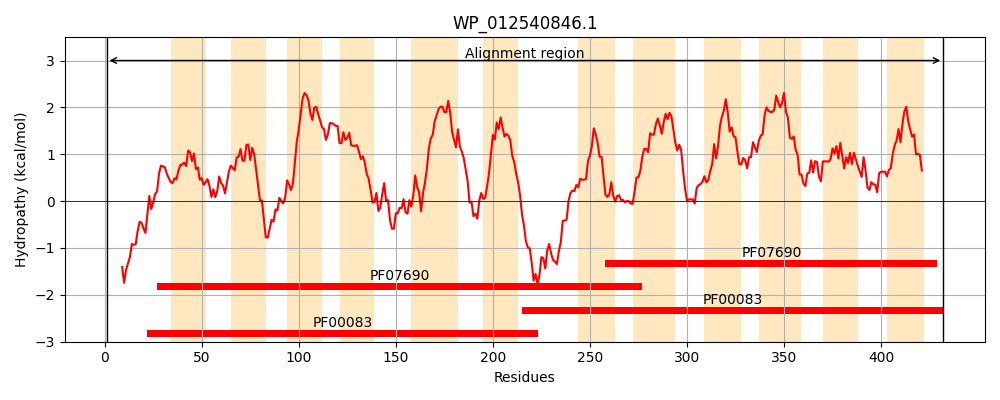
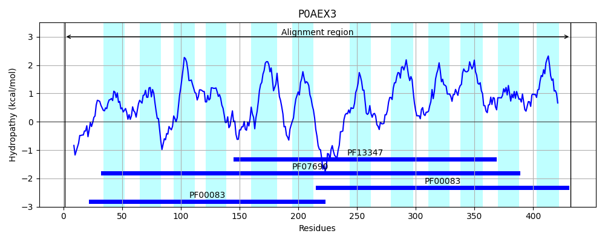
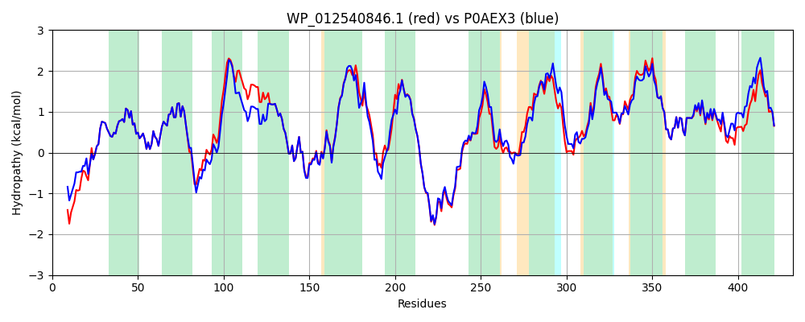

Hit Accession: P0AEX3
Hit TCID: 2.A.1.6.2
Hit Description: gnl|BL_ORD_ID|8797 gnl|TC-DB|P0AEX3|2.A.1.6.2 Alpha-ketoglutarate permease - Escherichia coli.
Mach Len: 432
e:0.000000
Query TMS Count : 12
Hit TMS Count: 12
TMS-Overlap Score: 11.500000
Predicted Substrates:CHEBI:5584;hydron, CHEBI:16810;2-oxoglutarate(2-), CHEBI:22599;arabinose
BLAST Alignment:
Score: 1944 , Bit scores: 753 bits, E-value: 0.0e+00, Alignment length: 432, Percentage identity: 87
Query: 1 MTESSITERGAPDQADTRRRIWAIVGASSGNLVEWFDFYVYSFCSLYFAHIFFPSGNTTTQLLQTAGVFAAGFLMRPIGGWLFGRIADRRGRKASMLISVCMMCFGSLVIACLPGYAVIGTWAPALLLLARLFQGLSVGGEYGTSATYMSEVAVEGKKGFYASFQYVTLIGGQLLAVLVVVALQQVLSDEDLHAWGWRIPFALGAVLAIVALWLRRQLDETSKQETRALKEAGSFKGLWRNRRAFVMVLGFTAAGSLTFYTFTTYMQKYLVNTAGMTASTASVIMTAALFVYMLVQPLFGAFSDKVGRRTSMLCFGVLATLFTVPILSALQKVSSPYAAFGLVICALLIVSFYTSISGILKAEMFPAQVRALGVGLSYAVANALFGGSAEYVALSLKSAGIEHAFYWYVTVMAAIAFLVSLMLHRKGKGLRL 432
M ES++T +DTRRRIWAIVGASSGNLVEWFDFYVYSFCSLYFAHIFFPSGNTTTQLLQTAGVFAAGFLMRPIGGWLFGRIAD+ GRK SML+SVCMMCFGSLVIACLPGY IGTWAPALLLLARLFQGLSVGGEYGTSATYMSEVAVEG+KGFYASFQYVTLIGGQLLA+LVVV LQ + D L WGWRIPFALGAVLA+VALWLRRQLDETS+QETRALKEAGS KGLWRNRRAF+MVLGFTAAGSL FYTFTTYMQKYLVNTAGM A+ AS IMTAALFV+ML+QPL GA SDK+GRRTSMLCFG LA +FTVPILSALQ VSSPYAAFGLV+CALLIVSFYTSISGILKAEMFPAQVRALGVGLSYAVANA+FGGSAEYVALSLKS G+E AF+WYVT+MA +AFLVSLMLHRKGKG+RL
Sbjct: 1 MAESTVTADSKLTSSDTRRRIWAIVGASSGNLVEWFDFYVYSFCSLYFAHIFFPSGNTTTQLLQTAGVFAAGFLMRPIGGWLFGRIADKHGRKKSMLLSVCMMCFGSLVIACLPGYETIGTWAPALLLLARLFQGLSVGGEYGTSATYMSEVAVEGRKGFYASFQYVTLIGGQLLALLVVVVLQHTMEDAALREWGWRIPFALGAVLAVVALWLRRQLDETSQQETRALKEAGSLKGLWRNRRAFIMVLGFTAAGSLCFYTFTTYMQKYLVNTAGMHANVASGIMTAALFVFMLIQPLIGALSDKIGRRTSMLCFGSLAAIFTVPILSALQNVSSPYAAFGLVMCALLIVSFYTSISGILKAEMFPAQVRALGVGLSYAVANAIFGGSAEYVALSLKSIGMETAFFWYVTLMAVVAFLVSLMLHRKGKGMRL 432 | Protein Hydropathy Plots: |
|---|
|  |  |
Pairwise Alignment-Hydropathy Plot:
|
|---|
|  |